mu-On Manual: 909-Style Groove Sequencer User Guide
mu-On: Groove Sequencer.
Prefer a file? Download the manual as a PDF. Back to mu-On · release notes · all guides.
1. Introduction
mu-On is a 909-style groove sequencer from Transwarp Development Project. It runs as a VST3 plug-in, a CLAP plug-in, and a standalone application.
mu-On is built from tracks, one to eight of them. Every track has a row of steps (sixteen by default, up to 64) and a sound engine that plays them: Kick, Bass, FM Perc and Chord are synthesised, Hat and Snare are built-in drum sounds, and Rumble is a special engine that does not play steps at all but turns another track's sound into the long, dark reverb tail of techno. You switch a track's engine at any time with the Engine dropdown, and the track keeps each engine's settings.
Around the tracks is the family you may know from mu-Clid and mu-Tant: eight modulators per track, a mixer with sidechain ducking, shared effects, presets and the transport bar. In the mixer you can make the bass duck from the kick, for the classic pumping groove.
mu-On is free to download and use, with every feature, and a one-off £20 licence removes the licence reminder (see Supporting mu-On).
Who Is This For?
mu-On is for producers who want a quick, hands-on groove box inside their DAW or on its own: four-on-the-floor kicks, off-beat basslines, hats, snares and a rumble, all with one click per step. It is fully automatable and synchronised to the host transport, or runs standalone for live performance and sketching.
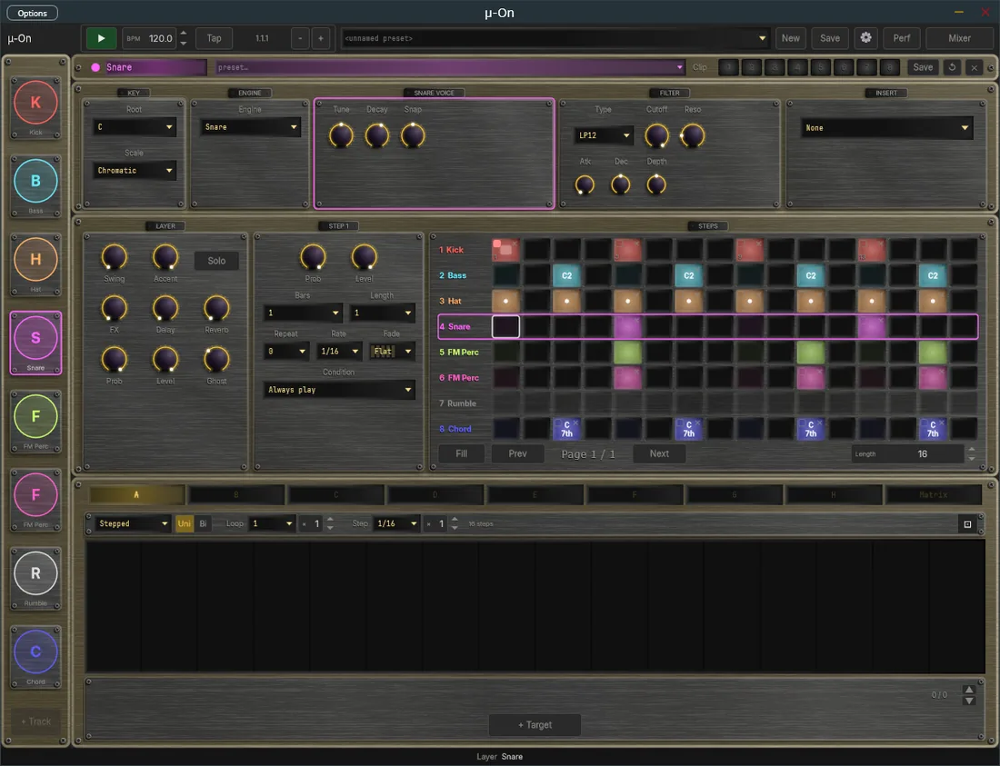
2. Installation
Plug-in Files
mu-On ships in three formats:
- VST3 — copy mu-On.vst3 to %ProgramFiles%\Common Files\VST3\
- CLAP — copy mu-On.clap to %ProgramFiles%\Common Files\CLAP\
- Standalone — run mu-On.exe from any location
Content Folder
On first launch mu-On creates a content folder at %USERPROFILE%\Documents\TDP\muOn\ with sub-folders for presets (full preset files, .muOn) and tracks (single-track preset files, .muTrack).
Supporting mu-On
mu-On is free to download and use, and every feature works for everyone. A copy without a licence shows a polite reminder each time it loads. A one-off licence for £20 removes the reminder: after you pay, a licence key is sent by email from Lemon Squeezy, our payment provider, and entering the key removes the reminder for good. The key changes nothing else; mu-On works the same with or without it.
A copy without a key shows a polite 'Support mu-On' window every time you load mu-On: each new instance in your DAW, and each time the standalone app starts. It has three buttons:
- Maybe later — closes the window for that instance and carries on. It appears again the next time you load mu-On.
- Enter licence key — opens the 'Enter licence key - mu-On' panel, where you type in your key.
- Get a licence — opens the checkout page in your web browser. A licence is a one-off payment of £20, and a key is emailed to you.
The reminder cannot be switched off without a licence. To bring the window back at any time, click the Support link at the right of the Status Bar, or the Support button in the About panel.
To enter your key, click Enter licence key in the Support window, or click the mu-On logo to open the About panel and click Enter a key. In the 'Enter licence key - mu-On' panel (it reads 'Enter your licence key to remove the support reminder. Everything works either way.'), paste your key into the Licence key box and click Activate (or press Return). If you do not have a key yet, click Get a licence to open the checkout page in your web browser. mu-On needs an internet connection the first time, to register the key. One key can be used on up to 5 machines. When the key is accepted the panel shows a confirmation and closes, the About panel thanks you for your support, and the Support window and Support link no longer appear.
A licensed copy shows 'Thank you for supporting mu-On.' in the About panel.
Once activated, mu-On checks your key with the server now and then when it starts. If you are offline at that moment it carries on working as normal for up to 30 days.
If activation fails, the panel tells you why. Check that you pasted the whole key and that you are online, then try again. A key that has already been used on 5 machines needs one of them released first; use Contact Support at the bottom of the Settings page. If the computer has no internet connection at all, the licence key panel shows a machine code at the bottom. Send that code to Contact Support and you can be sent an offline licence file for that computer, to place in the mu-On content folder.
3. Interface Overview
The mu-On window is divided into four regions:
- Transport Bar (top) — playback, BPM, presets, mixer, and settings
- Track Sidebar (left) — one item per track, plus an Add button
- Track Editor (centre) — the engine, the KEY section, the groove controls and the step rows, with the modulators below, for the selected track
- Mixer overlay — opened from the transport bar, replacing the editor
- Status Bar (bottom) — the name, value and unit (ms, s, Hz, kHz, %, dB, semitones, cents, octaves or a note name) of the control you last touched, with a small Support link at the right-hand end. When a newer version is available, an Update available link appears beside Support (see Update Check in the Settings chapter)
The window has two sizes, Medium and Large, chosen in Settings (Display, Size). Everything scales with it. In the standalone application an Options button at the top left of the window opens the audio and MIDI device settings.
4. Transport Bar
Controls from left to right:
- mu-On logo — click to open the About panel, where you can also support mu-On or enter a key
- Play / Stop — in DAW mode follows the host transport and BPM, even while the plug-in is bypassed; in standalone starts and stops playback. Locked while an external MIDI clock controls play (see MIDI Clock Sync).
- BPM display — read-only in DAW mode; editable in standalone. Tempo runs from 20.0 to 300.0 BPM with one decimal (for example 127.5; whole tempos show .0). Click the up or down arrow to step one whole BPM and keep the fraction (127.5 becomes 128.5); Shift+click steps a tenth. Double-click to type a value such as 127.5 or 127,5; a value outside the range is clamped to it. The same field appears in Settings. Locked, and showing the clock's tempo to a tenth, while an external MIDI clock sets the tempo. The clock drives the step sequencer and the modulators.
- Clock lamp — standalone only. Replaces the Tap button and sits between the BPM display and the Position readout, and appears only while MIDI clock sync is on with Messages set to Clock only or Clock + Transport (it is hidden with Transport only, and when Source is Internal). Dim amber means waiting for clock, green means locked to the clock, red means the clock was lost and the transport has stopped. The lamp stays steady; it never blinks. Hover over it to read its state in the status bar. See MIDI Clock Sync.
- Tap button — standalone only. Takes the place of the Clock lamp whenever the lamp is not shown (the internal clock, or MIDI clock sync set to Transport only), so you see Tap or the lamp, never both. Tap it in time with the beat to set the tempo: it needs two taps, averages your last four intervals, and starts a new count if you pause for more than two seconds. The result is rounded to a tenth of a BPM, kept within 20 to 300, and written into the BPM field.
- Nudge buttons (− and +) — standalone only. Two small buttons just right of the Position readout. Hold − to run the groove 4 % slower, or + to run it 4 % faster, to line up with another player by ear. Let go and the set tempo returns exactly; the BPM field never changes. Under an external MIDI clock, holding a button shifts the groove against the clock by that amount, and the shift stays until the next Start.
- Position — bar, beat, and sixteenth readout (e.g. 3.2.1). In DAW mode it follows the host's position, even while the plug-in is bypassed, and counts in the host's time signature: in 3/4 a bar has three beats, in 7/8 it has seven eighth-note beats, and the last number is the sixteenth within the beat. Bar 1 starts where the host's bar 1 starts, so a pickup bar is counted correctly. The standalone counts in the time signature chosen in Settings (4/4 by default). The time signature only changes the readout; mu-On's step rows and modulator loop lengths still treat a bar as four beats.
- Preset dropdown / New / Save — load and save full .muOn presets. New loads your default preset (tick Save as Default when saving) after asking whether to discard unsaved changes.
- Settings (gear) icon — opens the Settings overlay.
- Perf button — standalone only. Sits between the Settings icon and the Mixer button and turns on Performance mode (also Ctrl+P). See Performance Mode in the Presets chapter.
- Mixer button — opens the mixer overlay. The label changes to Sequencer while the mixer is open.
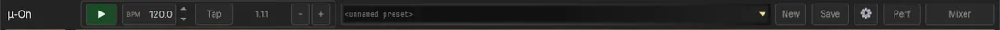
5. Track Sidebar
The sidebar shows one item per track, each with a letter for its engine (K for Kick, B for Bass, H for Hat, S for Snare, R for Rumble, F for FM Perc, C for Chord), its colour and its name. Click an item to select that track for editing.
- Add — the + Track button at the bottom adds a track (maximum eight; the button is disabled at eight). A new mu-On starts with one Kick track. + Track asks which engine the new track runs: Kick, Bass, Hat, Snare, Rumble, FM Perc or Chord. The new track starts with that engine's starting groove.
- Delete — the Delete (×) button in the track header removes the selected track, after a confirmation. The last remaining track cannot be deleted.
- Reorder — drag an item up or down. A track keeps its settings, steps and colour when it moves.
A track is named after its engine and the name cannot be edited, so two Kick tracks are both called Kick. Presets saved by the earlier five-lane version of mu-On, which had fixed Kick, Bass, Hat, Snare and Rumble lanes, open as five tracks.
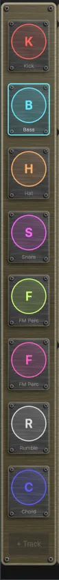
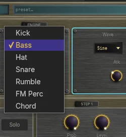
6. Track Header
At the top of the track editor:
- Track name and colour dot.
- Track preset dropdown — load a single track from a .muTrack file in the Tracks folder.
- Clip strip — eight numbered pads that store and recall versions of this track (see Clips in the Presets chapter).
- Save — saves this track as a .muTrack file.
- Reset (circular arrow) / Delete (×) — reset to defaults / remove the track (both confirm first). Reset also clears the track's clips, and its confirmation then says so.
7. Engines
The Engine box sits at the top of the track editor. Its first control is the Engine dropdown: Kick, Bass, Hat, Snare, Rumble, FM Perc or Chord. The knobs next to it belong to the chosen engine. Changing the engine asks no questions: every engine remembers its own settings on that track, so you can switch away and back without losing a sound. The track is renamed to the new engine's name. Knob labels are fixed words with no units; the Status Bar shows the name, value and unit as you hover or turn. Time and cutoff knobs give more of their travel to the short and low settings, so fine adjustments there are easier.
KEY (Root and Scale)
The KEY section is the leftmost section of the track editor. Its Root and Scale set the musical key for the whole of mu-On: they are global to all tracks, and the section is edged to show that it does not belong to the selected track. Kick and Bass tuning snap to the key, Bass steps move through its scale, and Chord steps are built from it.
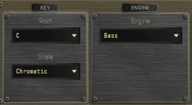
Kick
A synthesised kick: a sine body with a fast pitch drop for the thump, and a drive stage for click and punch.
- Tune (30 to 120 Hz, default 50) — the body's resting pitch.
- Pitch (0 to 600, default 220) — how far the pitch sweeps above Tune at the start of the hit.
- P.Dec (5 to 200 ms, default 50) — how quickly the pitch drops back to Tune.
- Decay (20 to 800 ms, default 180) — the length of the body.
- Drive (0 to 1, default 0.2) — saturation for punch and click.
Bass
A deep synthesised bass, the engine with the most to play with: a main oscillator and a sub oscillator an octave below, an amp envelope, and a filter with its own envelope and drive. The Bass has two sections, OSC/AMP for the sound itself and FILTER for how it is shaped.
- OSC/AMP, top row: Wave (Sine, Saw or Square for the main oscillator), Tune (20 to 120 Hz, default 41.2, the bass note; 41.2 Hz is the low E), Fine (plus or minus 100 cents off the key's note), Sub (0 to 1, default 0.5, the level of the sub oscillator) and Glide (how long the pitch slides into a tied step).
- OSC/AMP, second row: Atk (0.5 to 200 ms, default 2), Dec (20 to 1500 ms, default 200), Sus (0 to 1, default 0) and Rel (5 ms to 2 s, default 300 ms) — the volume envelope of each note.
- FILTER, top row: Type (any of the sixteen filters listed under FILTER below, default LP12), Cutoff (40 to 4000 Hz, default 600), Reso (0 to 1, default 0.2) and Drive (0 to 1, default 0.2, warm saturation).
- FILTER, second row: Atk, Dec, Sus, Rel and Depth, a full attack/decay/sustain/release envelope for the cutoff. Depth (0 to 1, default 0.4) sets how far each note opens the filter; Dec defaults to 180 ms. With Rel at 0 the envelope keeps falling after the note ends.
There is no pitch envelope on the Bass. Raise Sub, Drive and Reso for a gritty rumble.
A new Bass sequence starts with every step on the key's root note, and Tune reads Root until you turn it. Each step then has its own note: drag up or down on a Bass step to move its note through the scale, and hold Shift while dragging to change its octave. Dragging sideways across two steps still ties them.
FILTER (Kick, Hat, Snare and FM Perc)
Kick, Hat, Snare and FM Perc each have a FILTER section after the sound itself (the Bass has its own, described above, and the Chord has one with a full envelope).
- Type — any of sixteen filters: LP12, HP12, BP12, Notch12, LP24, HP24, BP24, LP6, CombPlus, AP12, Notch24, HP6, Peak, LowShelf, HighShelf or CombMinus. LP12 with the cutoff fully open is the same as no filter, and is the default.
- Cutoff and Reso — where the filter sits and how sharply it peaks.
- Attack, Decay and Depth, in smaller knobs on a second row — an attack/decay envelope that sweeps the cutoff on each hit; Depth sets how far.
All of the FILTER knobs can be modulated.
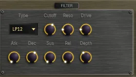
Hat and Snare
Hat and Snare are built-in drum sounds (a bright noise hat, and a snare made of noise and a body tone). They play in one shot on each step. You cannot load your own samples into them.
- Tune (-12 to +12 semitones) — pitch of the sound. The Hat has two sets of knobs, one for the closed hat (Cl.Tune, Cl.Decay) and one for the open hat (Op.Tune, Op.Decay); each step plays the closed or the open hat.
- Decay — how long the sound lasts: 10 to 400 ms for the Hat (default 60), 20 to 600 ms for the Snare (default 160). The Snare also has Snap, the sharpness of its attack.
- Tune link (Hat) — a line with a lamp under Cl.Tune and Op.Tune. Click the lamp to switch the link on: the two tune knobs then move together, so turning one turns the other by the same amount, whether you use the knob, automation or a preset. Click it again to unlink them. There is no separate Hat Sound choice.
FM Perc
FM Perc makes toms and techno percussion by frequency modulation. An Algorithm choice (Tom, Conga, Zap, Click / Rim, Clank, Wood / Mallet, Pluck / Ping or Burst / Glitch) picks the character, and the same knobs shape every one: Tune, Ratio, Index, FM Env, Fdbk, Dive, Dv Time, Decay, Fold and Noise. It plays on its steps like the Kick, and has the FILTER section described above.
Chord
Chord plays a chord on each step, for dub-techno stabs. Each step names its own chord, inversion and spread, built in the key and scale of the KEY section.
- Wave — Saw, Square or Pulse. The amp envelope Atk, Dec, Sus and Rel are the smaller knobs under Wave.
- FILTER section — Cutoff, Reso and Drive (saturation before the filter), and an A/D/S/R envelope for the cutoff: Atk, Dec, Sus, Rel and Depth.
Chord steps can be ghosts (see Steps and Groove).
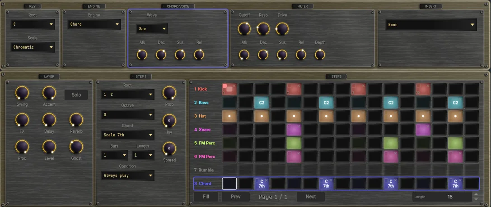
Rumble
Rumble is not a drum you step. It is the classic techno rumble: it takes the sound of another track, the Source, and runs it through a drive stage, three tempo-synced delay taps, a dark reverb, a volume envelope you draw, and a filter. Its step row is dimmed and ignored.
- Source dropdown — which track to process. It lists the other tracks by number and name, for example 1 Kick, and starts on the first Kick. A Rumble whose source is missing, silent or another Rumble makes no sound.
- Drive (0 to 1, default 0.4) — saturation on the incoming sound.
- 1/16, 2/16, 3/16 (0 to 1) — the level of three delay taps, one, two and three sixteenth notes behind the source.
- Rv Size (0 to 1, default 0.7), Rv Mix (0 to 1, default 0.5) and Rv LP (200 Hz to 18 kHz, default 1.2 kHz) — the reverb's size, how much of it you hear, and how dark it is.
- Cutoff (20 Hz to 20 kHz, default 800) and Reso (0 to 1, default 0.2) — the final filter.
While a Rumble is selected, the Groove box shows the Envelope instead: a drawable curve that shapes the volume of the rumble over its loop. A Loop control above the curve sets the loop length as a note value times a multiplier (1/4 x 4 is one bar by default). Click on the curve to add a point, drag to move it, right-click to remove.
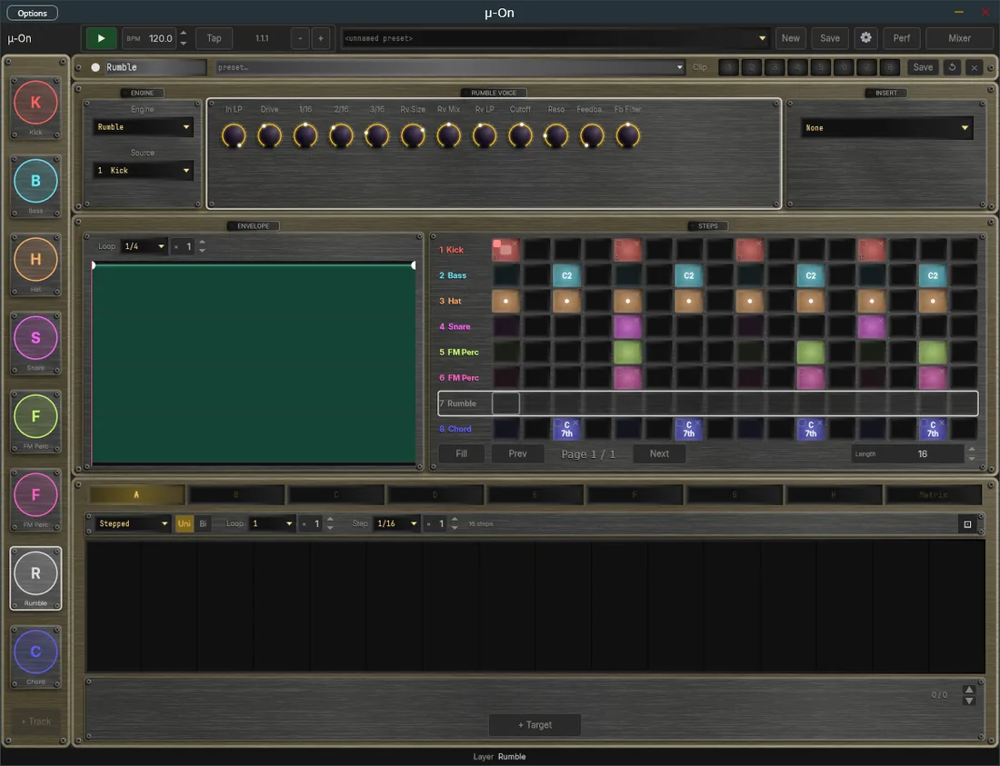
8. Steps and Groove
Step Rows
The Steps box shows one row of steps for every track, in the sidebar order and in each track's colour. A row shows sixteen steps at a time. Sixteen steps make one bar; each step is a sixteenth note.
A row can be longer than one bar, up to 128 steps (eight pages of sixteen). Under the step rows, a strip lets you move around and set the length of the whole sequence:
- Prev and Next — show the previous or next sixteen steps. Prev is greyed out on the first page and Next on the last.
- Page — reads, for example, Page 2 / 4: the page you are looking at, and how many pages the row has.
- Length (bars, 1 to 8, default 1) — the length of the whole sequence. Pages follow it: one bar is sixteen steps. A layer cannot be longer than the sequence.
- Reset (bars, Off or 1 to 32, default Off) — every so many bars, every layer goes back to its first step at the same moment. Use it to bring layers of different lengths or speeds back together.
Each row has its own playhead, so you can see where every layer is. A layer's own length and speed are set in the LAYER box (see Groove Box below). A row of 12 steps against a row of 16 makes a pattern that shifts against the others.
Steps past the layer's Length are shaded with diagonal hatching: they are not part of the pattern and do not play. They keep their settings, so making the row longer again brings them back. If a tie runs across the edge of a page, a short tie stub at the start of the next page shows that its first step is tied to the step before.
- Left-click a step to switch it on or off.
- Right-click a step to switch its accent on or off. An accented step is drawn with a hotter centre and plays harder.
- Alt+drag a step up to accent it, on any engine. On a Kick, Hat, Snare, FM Perc or Chord step, Alt+drag down makes it a ghost: played softly, and drawn as an outline that fills out as the Ghost level rises. On a Hat step, a plain vertical drag switches it between open and closed.
- On a Bass step, drag up or down to move its note through the scale; Shift+drag changes its octave. Drag sideways to tie notes.
- Click anywhere in a row to select that track. The selected track's row is outlined in its colour.
- The step you click is the selected step, and the per-step panel edits it. If you shorten a row so that the selected step falls past its end, the selection moves back to the row's last step, so the panel never edits a step you cannot see.
- A playhead line runs through the rows with the transport. Every four steps (one beat) are tinted slightly differently so you can count.
Every engine starts with its own groove: four-on-the-floor for the kick, off-beat for the bass, straight eighths for the hat, a backbeat for the snare and nothing for the rumble. A track keeps its row when you change its engine.
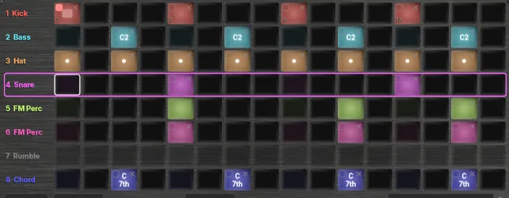
Step Panel
Next to the Groove box, the Step panel edits the selected step (the one you last clicked) of the selected track. Everything in it belongs to that one step, so each step can have its own probability, loop, repeats and condition. A Rumble has no steps and no Step panel.
- Prob and Level (knobs, top row) — Prob is the chance that the step plays, 0 to 100 percent (default 100). Level is the step's own volume, 0 to 100 percent (default 100), combined with accent, ghost and the track's Level.
- Plays on Loop — a step can play only on some passes of a longer cycle. A loop is one pass through the whole row. Length (1 to 8, default 1) is how many loops make the cycle; at 1 the step plays on every loop. Loops chooses which of them the step plays on: open the list and tick as many as you like (it only offers loops up to the Length, and stays open so you can tick several). The box shows the ticked loops, such as 1, 2, 5, or All, or None. With Length 6 and loops 1, 2 and 5 ticked, the step plays on those three loops of every six. With none ticked the step never plays. Loops are counted from the start of playback.
- Repeat, Rate and Fade — repeat the step's note quickly, like a roll. Repeat (0 to 16, default 0 = off) is how many extra hits follow the first. Rate is the time between hits, from 1/4 down to 1/64, with triplet rates (1/8T, 1/16T, 1/32T); the default is 1/16. Fade shapes the level across the run of hits: Flat (all alike), Out 50 (fades to half), Out (fades right down), In 50 (starts at half and rises) or In (starts quiet and rises to full); the little bars beside each name show the shape. Repeats stop when the next step that is on plays.
- Condition — a rule the step must also pass: Always play (the default), Play on Fill (only while the Fill button is held), Play if previous played (only if the nearest earlier step on the same track actually played) or Play if previous didn't. A step plays only if its Bars, its Condition and its Prob all allow it.
- Octave and Note (Kick and Bass steps) — the pitch of the step, within the key.
A Chord step uses the same panel with Root, Octave, Chord, Inversion and Spread. It has Prob, Bars, Length and Condition, but no Level, Repeat, Rate or Fade.
The Fill Button
Fill sits at the left of the strip under the step rows. It is a hold button, not a switch: while you hold it down, every step set to Play on Fill plays, and as soon as you let go they stop. Use it for fills and variations at the end of a phrase. The Status Bar shows Fill: On or Off. Fill is also a modulation target (Performance, Fill), so a modulator can press it for you: it counts as held while its modulated value is half or more.
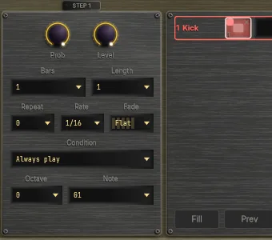
Groove Box
These controls on the left of the Steps panel (the LAYER box, a narrow box beside the wider STEPS box) apply to the whole track:
- Length — how many steps this layer plays before it starts again, from 1 up to the sequence length. Use the arrows to change it by one, or double-click it and type a number. If the sequence is shorter than the layer's Length, the layer plays only as far as the sequence; its own Length is kept, so a longer sequence brings it back.
- Speed (default 1/16) — how long each step of this layer lasts, from 1/4 down to 1/64, with triplet speeds (1/8T, 1/16T, 1/32T). Layers at different speeds run against each other for polyrhythms. Swing follows the layer's Speed.
- Play Mode (default Forwards) — the order the layer plays its steps: Forwards, Backwards or Random. Random picks a step each time, and the display and the sound agree. Ties and tied-note holds only apply in Forwards. Play Mode is a modulation target (Performance, Play Mode); the modulated value is rounded to the nearest of the three modes.
- Swing (default 0) — pushes every second sixteenth later, up to half a step, for a shuffle. 0 is straight.
- Ghost (default 35 percent) — how loud ghost steps play. It can be modulated.
- Accent (default maximum) — how hard accented steps are played. Plain steps always play at a lower fixed level. Accent runs from that plain-step level up to full: at the minimum, accented steps play no harder than plain ones; at the maximum they play at full level.
- Remove p-lock — right-click a knob that has a locked value on the selected step to remove the lock (the menu item reads Remove p-lock).
- Solo, the three send knobs (Effect, Delay and Reverb), Probability and Level — the track's solo button, its sends into the shared effects, a chance for every step on the track to play, and the track's overall level.
With a Rumble selected, the Groove box shows the Rumble's Envelope instead (see Rumble).
9. Modulators
Each track has eight independent modulators (Mod A through Mod H) plus a Matrix tab - the same shared engine as mu-Clid and mu-Tant. Each track has its own modulator bank.
Each modulator has a Mode dropdown (Stepped bar-graph or Smooth drawable curve), a Polarity switch (Uni 0 to +1, or Bi -1 to +1), and a loop length (a note-value dropdown times an integer multiplier). A playhead line shows the current loop position. In Smooth mode the curve is a smooth line through each point that never swings past its neighbours; click to add a node, drag to move, ALT-click a segment to bend it, right-click to remove. In Stepped mode, drag bars up or down. A dice button randomises the current modulator's values without changing its shape.
Add destinations with the + Target button; the assignments are shown one at a time, so step through them with the up and down arrows and the counter at the right. Each assignment has a bipolar depth (-100 to +100 percent) and a source-side curve. The destinations are the controls of the track's engine, the track's mixer controls (Pan, sends, the insert knobs), Fill and Play Mode. If you change a track's engine, the assignments for the old engine stay in place but do nothing until you switch back. When a knob is a destination, an arc around it shows the live modulated value; this includes the insert knobs in the mixer.
The Matrix tab lists every assignment across all eight modulators in one table.
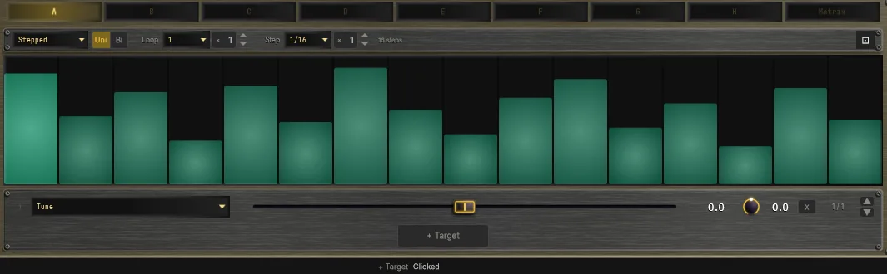
10. Mixer
Click the Mixer button in the transport bar to open the mixer overlay. Each track occupies one channel strip (the mixer always shows eight, with unused ones dimmed); to the right are the Effect, Delay, and Reverb return channels and the Master strip. This is the same shared mixer and FX rack as mu-Clid and mu-Tant.
Each track strip has a fader with VU metering, pan, mute and solo, sidechain ducking (source, amount, attack, release), and Effect / Delay / Reverb sends. Ducking is set up here and nothing is wired in advance: to make the bass duck from the kick, open the bass track's sidechain source dropdown, choose the kick track, and raise Amount. The sidechain source dropdown includes all other track channels plus an External option — duck any track from any other, or from a signal fed in through the host's sidechain bus (VST3 / CLAP). The sources follow their tracks when you delete or reorder tracks. The FX return strips carry intra-FX routing (Effect to Delay, Effect to Reverb, Delay to Reverb), and the master strip has two inserts, Insert 1 and Insert 2, that the summed output passes through in that order. A row of buttons at the top right (Peak, VU, K-12, K-14) chooses the metering standard. The three FX rows (Effect / Delay / Reverb) sit below the strips with algorithm selectors and inline parameters.
The faders use a rectangular cap like a small knob, with a pointer line across its middle that marks the level, running in a groove that lights up from the bottom to the cap. Every fader in the mixer looks and works the same way. In the Status Bar the mixer's Pan, Send and Sidechain knobs, the Level fader, the Mute and Solo buttons and the Effect and Delay switches all show their name and value as you use them. The sidechain Attack and Release start at 0 and can go down to 0. The Clipper insert shows a gain-reduction meter like the Compressor. Time and rate knobs of the Effect, Delay and Reverb give more of their travel to the short settings.
Effects
- Effect — Chorus (Rate, Depth, Voices, Spread), Flanger (Rate, Depth, Feedback), Phaser (Rate, Depth, Stages, Feedback) or Echo (Time, Feedback, Spread). The Effect is a pure send, like the Reverb, so it has no Mix knob; use each track's Effect send.
- Delay — a Time dropdown (Free, 1/32, 1/16, 1/8 or 1/4). With a note value, a Straight | Dotted | Triplet switch and a Multiple knob (1 to 8) set the time; in Free mode a Time knob sets it in milliseconds. Feedback, Spread and Dirt complete it.
- Reverb — Room, Hall, Plate or Spring, with Size, Decay (how long the tail rings, 0.1 to 10 seconds, default 2.5), Pre-delay, Diffusion, Damp, Mod and Dirt. Reverb is a pure send.
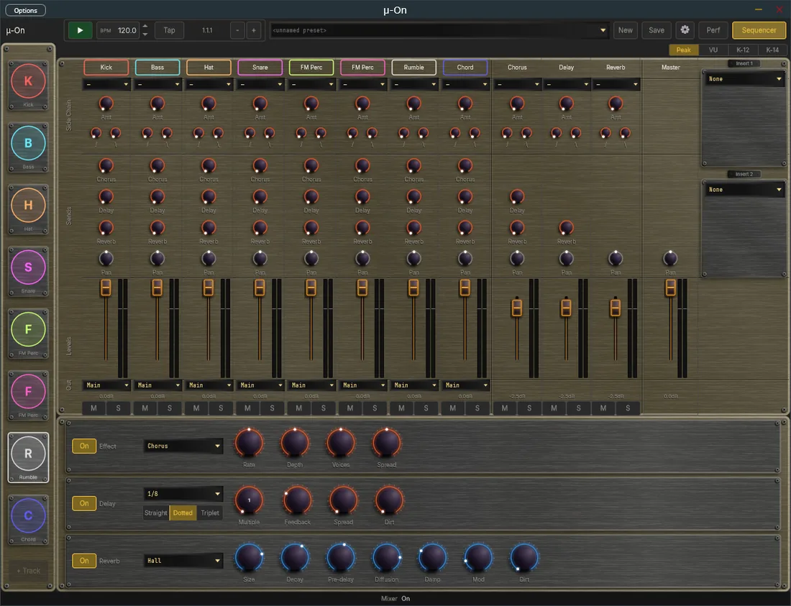
11. Presets
Full Presets (.muOn)
Full presets save the entire plugin state - all tracks, step rows, modulators, mixer, and FX - to Documents\TDP\muOn\Presets. Load from the transport dropdown, which is grouped by category. Save with the Save button: enter a name, an optional description and a category, and tick Save as Default to make it the preset that loads at startup and when you press New. If saving fails (for example a full disk) mu-On shows an error message and never leaves a half-written preset.
Per-Track Presets (.muTrack)
Each track can be saved and loaded independently to Documents\TDP\muOn\Tracks, including its engine, every engine's settings, its step row and its modulator assignments. Use the track header dropdown and Save button.
Full presets saved by the earlier five-lane version of mu-On still load, as five tracks. When a preset, a track preset or a saved session is loaded, any setting it does not contain is set to its default.
Clips
A clip is a stored copy of one track's current state, ready to recall in a moment while the music plays. Every track has up to eight clips. They sit in the Clip strip in the track's header, between the track-preset dropdown and the Save button: the word Clip followed by pads numbered 1 to 8. Use clips to prepare variations of a track and switch between them in time.
Each pad is lit in the track's own colour:
- Bright and steady — the clip that is playing.
- Dim — a clip is stored here and is available.
- Unlit, with just its number — the pad is empty.
- Pulsing — the clip is queued and will start at the next bar.
- Flashing on and off — the playing clip belongs to a muted track.
How to use the pads:
- Click a stored pad to launch it. If playback is running, the clip waits for the next bar and the pad pulses until it starts; when playback is stopped it starts at once. Clicking another stored pad while one is waiting replaces the waiting clip.
- Click the playing pad to mute the track. Click it again to unmute. If another clip is waiting, the click cancels the wait instead and the playing clip carries on.
- Click an empty pad to store the track's current state there. Nothing is lost, so there is no question. The new clip becomes the playing one.
- Shift + click any pad to store the track's current state in it. If the pad holds a different clip from the one playing, mu-On asks you to confirm with Replace. Storing over the playing clip, to update it after a tweak, needs no confirmation.
- Right-click a pad (or Ctrl + click) to open a small menu with Store here and Clear. Clear is available only on a stored pad and asks you to confirm. Clearing the playing clip leaves the track playing as it is; no pad is lit afterwards.
Turning a knob changes only the track that is playing, not the stored clip. To keep a tweak, store it again with Shift + click. Recalling a clip replaces any changes you have not stored, without asking.
Resetting a track with Reset also clears its clips; the confirmation then reads This also clears its clips. Deleting a track removes its clips with it. Clips are saved with full presets (.muOn) and with your DAW session or standalone state. Clips are not saved in single-track .muTrack files.
In Performance mode the Clip strip cannot be clicked, but it keeps moving so you can see what the control surface is doing.
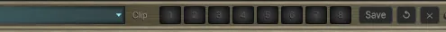
Performance Mode (Standalone)
Performance mode turns the standalone app into a locked gig view. The screen shows the preset that is playing, exactly as normal, but you cannot change anything with the mouse or keyboard. Only a connected control surface (set up through MIDI mapping) switches presets and tracks. Performance mode is not available in the VST3 or CLAP plug-in.
Performance mode plays a performance: a saved list of up to eight full presets, stored as a .muPerformance file in the Performances folder inside your content folder. You make, edit and choose performances in the Performance chooser.
The Performance Chooser
Open the chooser from the Performances entry at the bottom of the preset dropdown in the Transport Bar, from the Performances button in the footer of the Preset Browser, or by clicking the Perf button (or pressing Ctrl+P) when no performance has been chosen yet. You can only open it while Performance mode is off.
- On the left is the list of your saved performances. Click one to open it. The list scrolls.
- On the right are the eight places in the performance. Each row shows its number, the preset name, which product the preset is for, and buttons. An empty row has a + Preset button. A filled row has Replace, Up, Down and Remove: Replace picks a different preset, Up and Down move the preset in the order, and Remove empties the place.
- A preset whose file can no longer be found stays in its place with a red lamp and the word missing. Replace it or remove it.
- New starts an empty performance. Load opens a .muPerformance file that you choose from disk into the list; it never saves anything. Save stores the performance under a name and an optional description. Rename changes its name. Delete removes the saved file after asking you to confirm. Saving under the name of another performance asks before it overwrites.
- Use makes this performance the one that Performance mode plays, then closes the chooser. It does not change the preset that is playing now. If the performance is new or has changes you have not saved, Use saves it first (a new one asks for a name). Use is unavailable while the performance has no presets.
- While you have unsaved changes the title shows the name followed by (unsaved). Closing the chooser, clicking New, or opening another saved performance then asks Discard unsaved changes? Choose Discard to lose the changes, or cancel to keep working.
To fill a place, click + Preset or Replace. The Preset Browser opens in pick mode: its Load button reads Pick, and the Performances button is hidden. Select a preset and click Pick (or double-click it) to put it in the place and return to the chooser with your other edits kept. Close returns to the chooser without picking. The browser lists presets for this product only.
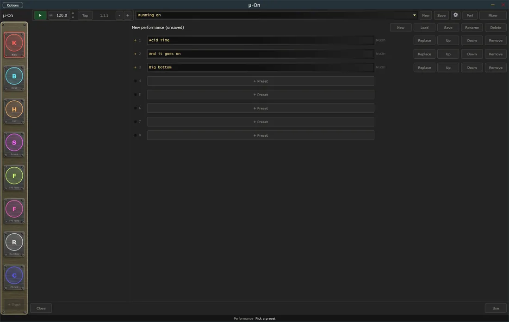
Entering
Click the Perf button (or press Ctrl+P). The preset that is playing carries on. Any open window, such as the Preset Browser, Mixer or Settings, closes without saving. If no performance has been chosen yet, the Performance chooser opens instead and the mode stays off.
What You See
- The Perf button lights in the app colour and its label changes to LIVE, and a thin lit line runs along the bottom of the Transport Bar.
- The preset dropdown, New and Save are replaced by a step indicator: a display showing the position and name of the playing preset (for example 3/8 Bassline), followed by a dimmed next preset when there is room, and a row of eight lamps. A bright lamp is the playing preset, a dim lamp is an available preset, a pulsing lamp is the preset queued to start, and an unlit lamp is an empty place. A red lamp marks a preset whose file is missing.
- When the control surface queues a switch, the playing preset stays on screen until the switch lands. The queued lamp pulses, an orange SWP badge appears, the display shows the queued preset in pulsing text, and the status bar reads Queued followed by the preset. All of this clears when the switch happens or is cancelled. The switch lands at the next bar.
- In the sidebar, the Add button is replaced by a read-only indicator such as Track 3/5. The screen follows the control surface: selecting a track on the surface shows that track on screen.
- Nothing dims or changes colour; knobs, meters and the playhead keep moving, so you can see what the surface is doing.
Leaving
Press and hold the Perf button for one second. The button fills from left to right while you hold, and the status bar reads Hold to leave Performance mode. Let go early to stay in the mode. A plain click does nothing, so you cannot leave by accident. When you leave, the normal controls come back.
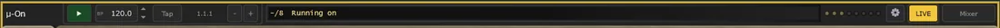
12. Settings
Click the gear icon to open the Settings overlay. Everything fits on one screen, in two columns, under two headings. Click Close to return.
General (left column):
- Audio, Master Vol — overall output level
- Display, Size — Medium or Large window. Reopen the app for the label fonts to rescale fully.
- Transport, Tempo — internal clock, 20.0 to 300.0 BPM with one decimal, also editable from the transport BPM field
- Transport, Time signature (standalone) — 2/4, 3/4, 4/4, 5/4, 6/4, 7/4, 5/8, 6/8, 7/8, 9/8 or 12/8; default 4/4. It changes how the bar.beat.sixteenth Position readout counts (a beat is a quarter note in x/4 and an eighth note in x/8). The step rows still run in four-beat bars.
- Updates, Check for updates — a tick box, ticked by default. Whether the app checks once a day for a newer version (see Update Check below).
MIDI (right column):
- MIDI Clock, Source (standalone) — Internal, or MIDI In to follow an external MIDI clock, with a Sync Offset to compensate for audio latency (see below).
- MIDI Program Change — the Track Presets and Full Presets buttons open the tables that map incoming program-change messages to presets.
A Contact Support link at the bottom of the page is there when you need help,. The Settings page also has a Send Feedback link (feedback@transwarp.me) beside Contact Support.
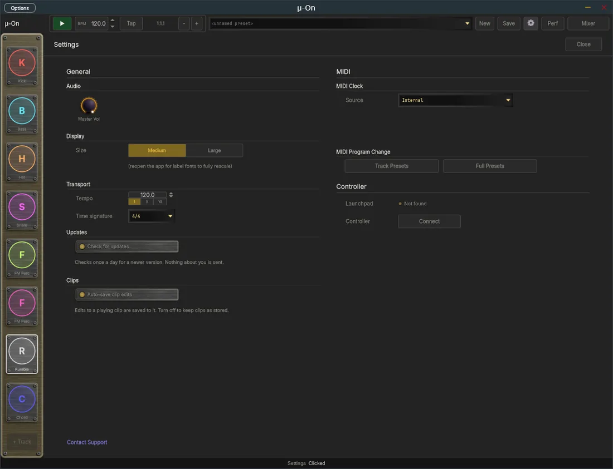
Update Check
mu-On can tell you when a newer version is available. Once a day it asks the transwarp.me website for the latest version number. When a newer version exists, a small Update available link appears at the right of the Status Bar, beside the Support link. Hover over it to see which version is out and which one you have.
- Click the link to open the download page in your web browser. mu-On never downloads or installs anything itself. The link then stays hidden for that version and comes back only when a still newer one is released.
- Right-click the link and choose Hide this notice to hide it for that version without opening the page.
- The link never appears in Performance mode.
Privacy: the check is a plain request for a public file. It sends nothing about you: no name, no identifier, no version number and no details of your computer. As with any request to a website, the site can see your internet (IP) address, as it would if you opened the page in a browser. The app compares the answer with its own version on your machine. To switch the check off, open Settings and, under General, untick the Check for updates box. With the box unticked, mu-On sends no request at all and shows no link. The box is ticked by default.
MIDI Clock Sync (Standalone)
When running as a standalone application, mu-On can follow an external MIDI clock from a drum machine, groovebox, or DAW. First choose the MIDI input that carries the clock in the standalone's MIDI settings. Selecting the input does not turn sync on by itself. To follow the clock, open Settings and, in the MIDI Clock section, set Source to MIDI In; set it back to Internal to turn sync off and ignore any incoming clock. A Messages choice appears, which decides what mu-On takes from the clock:
- Clock only — you start and stop mu-On with its own Play button, but the tempo and beat follow the clock's ticks. The BPM field is locked and shows the clock's tempo. The clock's Start and Stop messages are ignored.
- Transport only — the clock's Start, Continue, and Stop messages control playback (Start restarts from bar 1, Continue carries on from where it stopped), but mu-On plays at the tempo in its own BPM field and ignores the clock's ticks. The Play button is locked.
- Clock + Transport — the clock runs everything. Its Start, Continue, and Stop messages start and stop playback, and its ticks set the tempo and the beat. The first clock after Start counts as the downbeat, so your steps line up closely with the external device. The Play button and BPM field are locked.
With Clock + Transport or Transport only, mu-On also follows Song Position Pointer messages. If you stop the external sequencer, move its playhead, and press Continue, mu-On picks up from the new position instead of where it stopped.
With Clock only or Clock + Transport, a Clock lamp appears in the transport bar, between the BPM display and the Position readout. It shows the state of the incoming clock and stays steady in every state; it never blinks:
- Dim amber — Waiting for clock. Sync is on, but no clock pulses have arrived yet, or the master device is stopped and sending nothing.
- Green — Locked. mu-On is following the clock. Hover over the lamp and the status bar shows the tempo, for example "Locked at 120 BPM".
- Red — Lost. The clock pulses stopped arriving for about a quarter of a second while the master was playing, for example because a cable came loose or the master device was switched off. mu-On stops the transport, and the status bar shows "MIDI Clock: Lost, transport stopped" once, without you having to hover. When the pulses come back, mu-On carries on by itself.
The lamp is hidden with Transport only, because the clock's ticks are not used, and whenever Source is Internal. The BPM display works as before: it is locked and shows the clock's tempo while the clock sets the tempo.
Sync Offset — with Source set to MIDI In, a Sync Offset field appears in the MIDI Clock section of Settings. It runs from −50 to +250 ms (the label reads simply Sync offset) and defaults to 0. The value is shown with a sign, for example +25. The arrows step 1 ms; Shift+click steps 10 ms. A positive value makes mu-On play earlier than the clock says. Enter your audio output latency here (about 20 to 40 ms on Windows WASAPI) so the sound lands on the beat of a hardware master. mu-On remembers the setting between sessions.
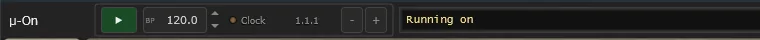
MIDI Program Change to Preset
mu-On can load presets from incoming MIDI program-change messages. On channels 1 to 8 a program change loads the matching .muTrack into that track; on channel 9 it loads a full .muOn preset. While playing, the change is staged and applied seamlessly (hot-swap). Configure the mappings with the Track Presets and Full Presets buttons in Settings, under MIDI Program Change.
13. Connecting to mu-link
mu-link is a companion application from Transwarp Development Project: a local audio hub and master clock for the mu family. When mu-link is running, the mu-On standalone application connects to it automatically — mu-On's audio is summed into mu-link's mix and its transport locks to mu-link's master clock. The plug-in versions are unaffected; only the standalone connects, because in a DAW the host already owns the clock and audio device.
How to Connect
- Launch mu-link, then launch mu-On standalone — in either order. Within about a second the mu-On title bar shows 'mu-link connected'.
- mu-On's audio now plays through mu-link's output device, summed with any other connected mu apps, and appears as a channel in mu-link's client strip with its own level, pan, mute, and solo.
- mu-On's step rows and modulators follow mu-link's clock: mu-link is the tempo master, and its Play/Stop and tempo drive mu-On. Use mu-link's transport (not mu-On's) while connected.
- Quit mu-link and mu-On instantly reverts to its own audio device and internal transport — no restart needed.
- MIDI in — the controllers you enabled in the standalone's MIDI settings still reach mu-On while it is connected, so program changes still load presets. For now they arrive roughly 85 milliseconds late, which is under a tenth of a second. Incoming MIDI clock is not followed while connected, because mu-link sets the tempo; to sync to external gear, connect its clock to mu-link instead.
This lets you run mu-On, mu-Clid, mu-Tant and other mu standalones together, perfectly in sync and mixed to a single output — and lets mu-link slave the whole rig to an external MIDI clock. See the mu-link User Manual for the full picture.
14. Tips and Workflow
- Starting out: press Play. The first track is a Kick playing four on the floor.
- Techno basics: add a Bass, a Hat and a Snare track with the + Track button, and a Rumble that takes the Kick as its Source.
- Pumping bass: in the Mixer, set the bass track's sidechain source to the kick, with Amount around 60 to 80 percent, a fast attack and a slow release.
- Off-beat groove: raise Swing a little and switch on accents on the off-beat hats with a right-click.
- Gritty bass: raise Sub, Drive and Reso, and give F.Env a slower E.Dec.
- Sounds that move: add a slow smooth modulator to the Bass Cutoff or the Kick Decay.
- Rumble shape: draw a curve in the Rumble envelope that dips on each beat so the tail swells between the kicks.
15. Technical Specifications
- Formats: VST3, CLAP, Standalone (Windows)
- Tracks: 1 to 8 (default 1), each with one of seven engines and a step row of 1 to 64 steps (16 by default, shown 16 at a time)
- Engines: Kick, Bass, FM Perc and Chord (synthesis), Hat and Snare (built-in sounds), Rumble (processes another track)
- Modulators per track: 8 (smooth LFO or stepped), plus a matrix view
- Full preset format: .muOn (XML). Per-track preset format: .muTrack (XML)
- Third-party libraries: JUCE, Signalsmith Reverb (MIT), clap-juce-extensions (MIT)
Hosts That Do Not Run an Event Loop
mu plugins need the host to run its normal event loop, as every ordinary DAW does. A few headless or offline-only renderers do not. In those, changes made by MIDI or a controller, MIDI program changes, and preset loads made while playing may not take effect until the host runs its event loop. If you hit this, load presets while the transport is stopped, or render with a host that runs its event loop.
Prefer a file? Download the manual as a PDF. Back to mu-On · release notes · all guides.